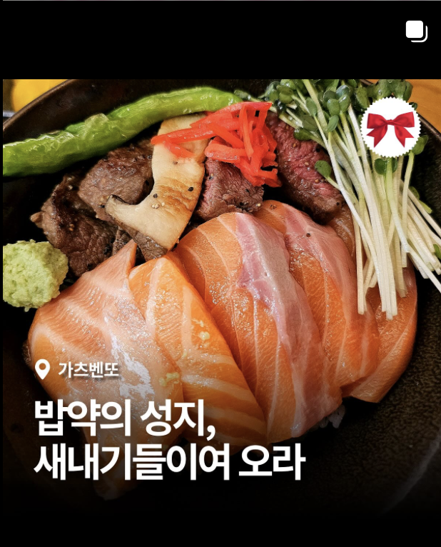
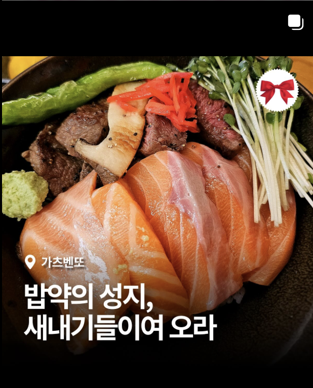
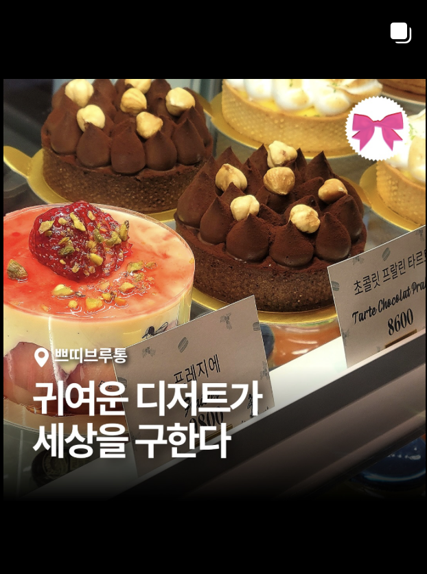
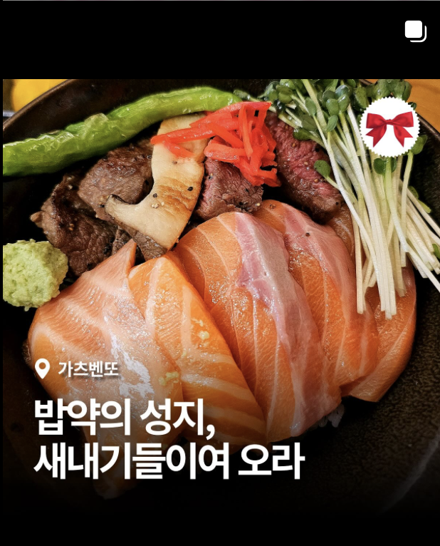
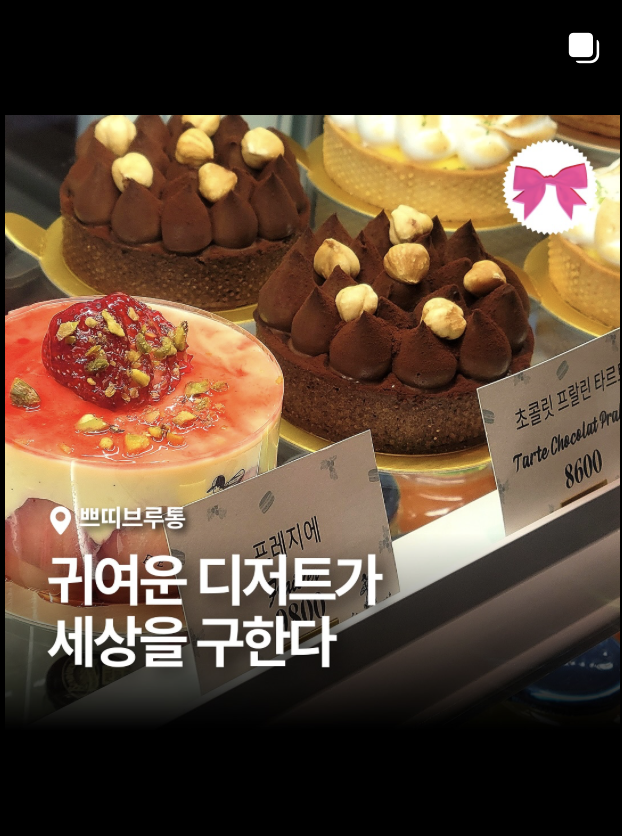
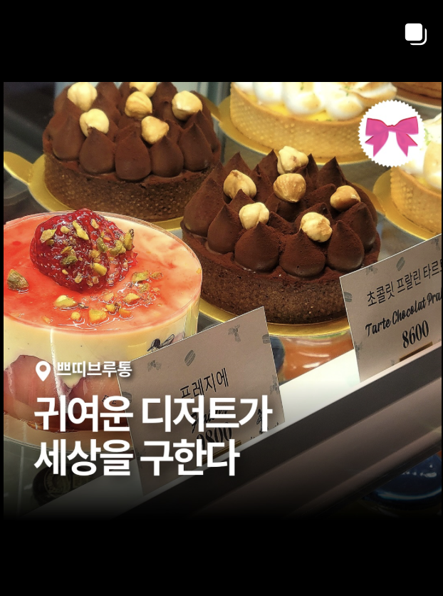
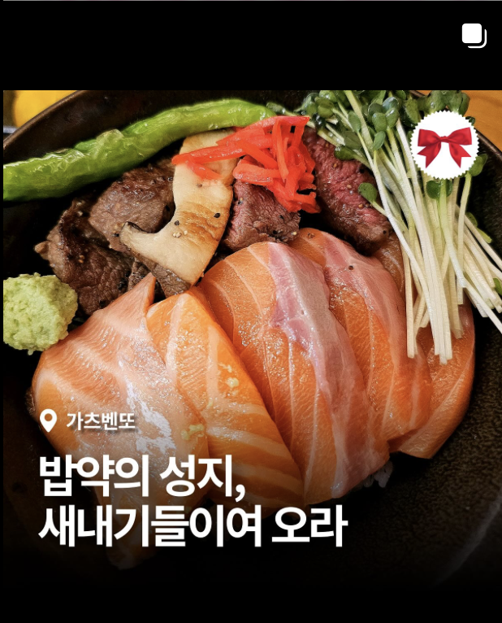
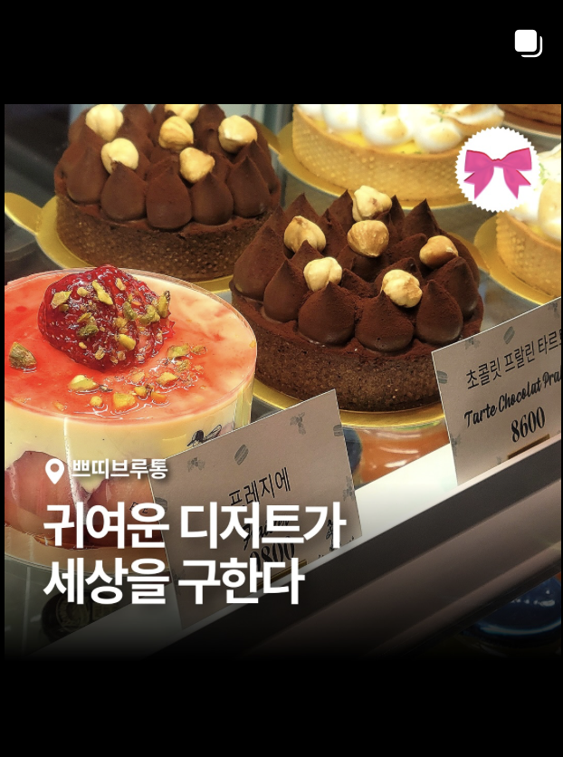

 





서강리본은 서강대학교 소수의 재학들이 자발적으로 기획한 비공식 맛집 아카이빙 프로젝트입니다.
매번 밥약을 잡을 때마다 ‘어디 가지?’란 질문 앞에 멈칫하게 되는 순간들—그 작은 일상적 고민에서 이 프로젝트는 시작되었습니다.
단순히 맛집을 소개하는 것에서 나아가, ‘서강인의 감정과 기억이 머무는 장소’를 기록해보자는 바램이 담겨 있습니다.
프로젝트는 세 가지 상징적인 리본으로 구성됩니다.
- ❤️🔥 카디널 리본 – 밥약하기 좋은, 서강인의 친근한 맛집
- ❤️ 레드 리본 – 식사에 진심인 이들을 위한 미식가 맛집
- 🩷 핑크 리본 – 분위기와 마음을 함께 나누고픈 공간
저는 이 프로젝트에서 비주얼 브랜딩과 전반적인 디자인 디렉션을 담당했습니다.
어떤 정보든 감정적으로 연결되기 위해선 '디자인의 언어'가 필요하다고 믿었고,
서강리본이 전하는 공간의 감도와 학생들의 기억이 자연스럽게 만날 수 있도록 시각적 시스템을 구축했습니다.
로고와 리본 색상, 타이포그래피, 카드뉴스 디자인, 촬영된 이미지의 색감 톤, 굿즈의 재질감까지—
각각이 서로를 방해하지 않으면서도 함께 서강리본이라는 하나의 감정선을 형성하도록 고민했습니다.
디자인은 여기서 단순한 외관이 아니라, 누군가에게 말을 걸 수 있는 감각의 매개라고 생각합니다.
특히 카드뉴스 작업은 단순 정보 나열이 아니라 하나의 에세이처럼 구성되길 바랐고,
모든 콘텐츠는 ‘정보를 전하면서도 분위기를 전달하는 것’을 가장 중요한 기준으로 삼았습니다.
서강리본은 협찬이나 광고 없이 운영되는 완전한 비영리 프로젝트입니다.
우리는 우리가 만든 이야기로 누군가의 기억에 닿을 수 있다면 좋겠다는 마음으로 서강리본을 만들어 가고 있습니다.
👉 Instagram에서 전체 보기


NomaCircle은 서강대학교 Google Developer Groups 해커톤에서 개발한 반응형 웹서비스입니다.
디지털 노마드 인구가 급격히 늘어나는 흐름 속에서, 저는 이들이 이상적인 워크스페이스를 찾고
비슷한 관심사를 가진 사람들과 연결될 수 있도록 돕는 플랫폼을 기획하고 디자인했습니다.
저는 이 프로젝트에서 UX/UI 디자이너로 참여했으며,
유저 플로우 설계부터 전체 비주얼 시스템 구축까지 디자인 전반을 책임졌습니다.
특히 모든 화면이 하나의 철학—
“디지털 노마드의 경로가 교차하는 지점”
이라는 핵심 개념에 따라 구성되도록 설계에 일관성을 유지하고자 했습니다.
랜딩 페이지는 입자의 질감을 담은 그라디언트 배경과
움직임・방향・순환성을 상징하는 'N' 로고로 시작되며,
단순히 서비스를 들어가는 게 아니라 하나의 여정을 시작하는 경험을 전달하고자 했습니다.
“Finding Place” 기능은 사용자가 주변의 카페나 워크스페이스를 찾을 수 있도록 돕는 핵심 기능입니다.
저는 이를 위해 정보를 빠르게 파악할 수 있는 카드형 UI를 디자인했고,
각 카드에는 평점, 영업 시간, 이미지 등을 담아 비교가 쉽게 구성했습니다.
지도 인터페이스는 네이버 지도 API를 활용해 구현되었으며,
사용자는 위치 추적 및 마커 기능을 통해 지도와 UI를 매끄럽게 넘나들 수 있도록 구성했습니다.
후기 입력은 흐름을 방해하지 않도록 글래스모피즘 오버레이 스타일로 구성하여 자연스러운 사용자 경험을 제공했습니다.
NomaCircle은 단순히 장소만 찾는 것이 아닌, 커뮤니티 플랫폼으로서의 기능도 포함합니다.
저는 다음과 같은 세 가지 네트워킹 게시판을 설계했습니다:
Position Board – 개발자/디자이너/마케터/창업가 등 역할 기반 분류 + 아이콘화
Real Connect – 관심사 기반 오픈 네트워크
Anonymous Board – 자유롭고 익명성이 보장된 대화 공간
각 보드는 서로 다른 상호작용 방식을 고려해 시각적 구조와 기능을 분리 설계했고,
코멘트 기능과 익명 여부 선택 등 커뮤니케이션 유도 요소도 함께 설계했습니다.
디자인 전반은 노마딕 라이프스타일에서 영감을 얻어 구성되었습니다.
주 색상은 짙은 네이비와 바이올렛 그라디언트로 고요함과 몰입감을 전하며,
미래지향적인 감각을 유지하고자 했습니다.
가독성을 위해 산세리프 폰트를 사용하고,
적절한 이모지와 직관적인 아이콘을 통해 감정을 전달할 수 있도록 했습니다.
저는 이 프로젝트 전반에서 Figma를 활용해 컴포넌트를 제작하고 프로토타입을 반복하며,
개발자와 실시간으로 소통하며 작업을 이어갔습니다.
짧은 해커톤 기간에도 저는 디자인의 감정적 일관성과 경험의 정서적 깊이를 놓치지 않으려 했습니다.
"보기 좋은 것이 아니라,
기능과 감정이 만나는 지점을 디자인하자."
이 프로젝트는 디자인이 물리적 세계와 디지털 세계를 연결할 수 있다는 믿음을 더 확고히 해주었습니다.
저는 단순한 워크스페이스 찾기 플랫폼을 만드는 것을 넘어서,
디지털 노마드의 여정에 오래도록 남을 수 있는 정체성과 경험을 구축하고자 했습니다.